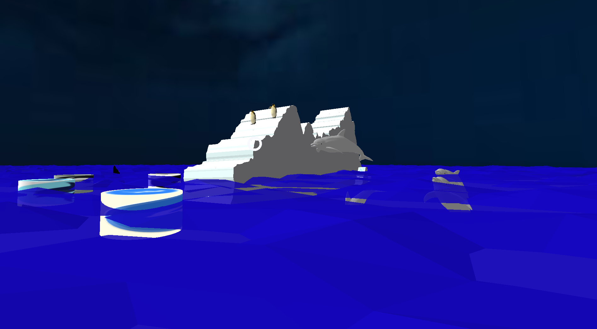
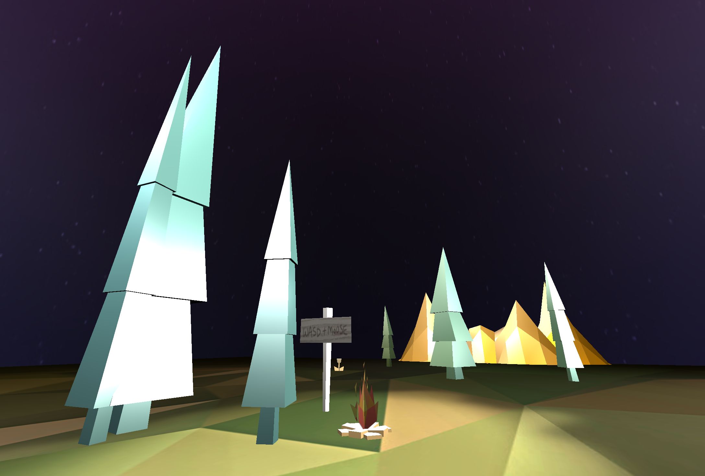
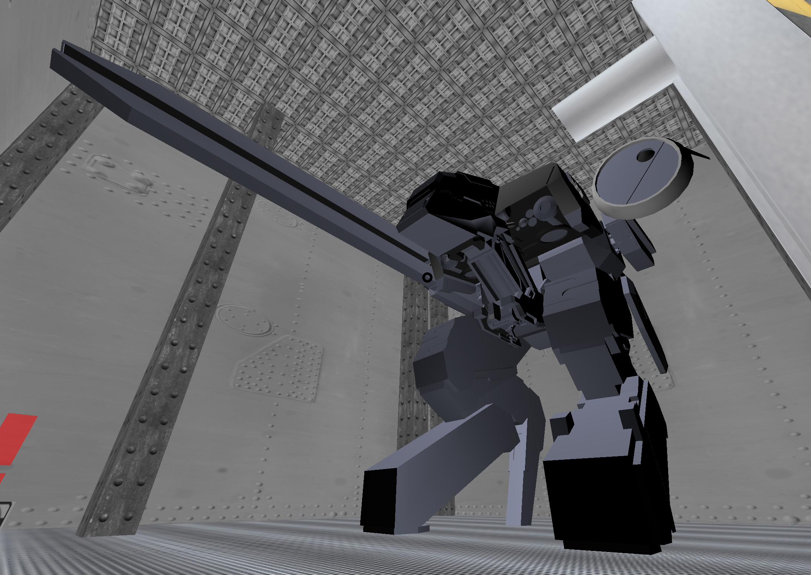
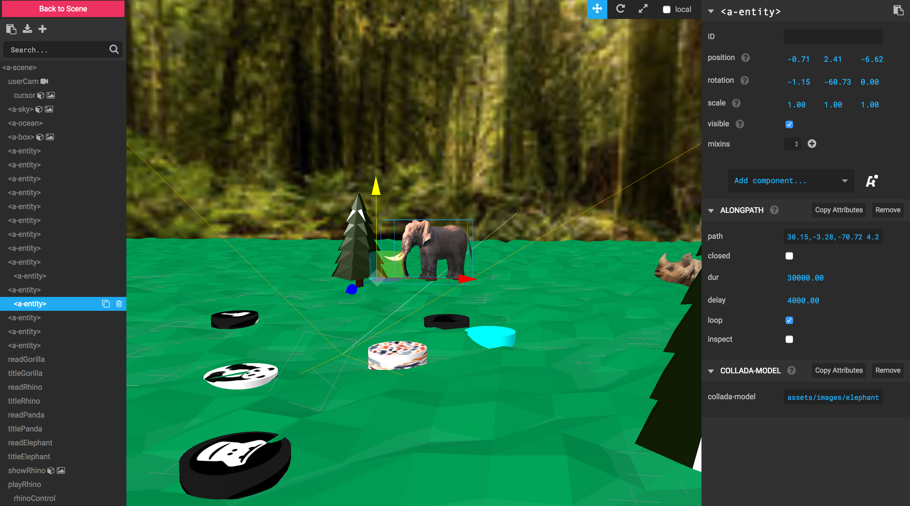

A-Frame
and how to make it awesome
About us
Two punks from GA trying not to embarrass ourselves ...or Jack
What is A-Frame?
A-Frame is a web framework created by Mozilla that is built on top of WebGL that greatly eases the learning curve of making VR in the browser
  How?
A-Frame allows creation of scenes by writing HTML. Under the hood however we have access to THREE.js, JavaScript and all existing web APIs
HTML Boilerplate
Getting starting with A-Frame couldn't be simpler simply reference A-Frame and call a-scene in the body and A-Frame sets up the scene from there
Render Lighting WebGL Canvas Camera
Entity component system (ECS)
Every object in A-Frame is a component. An entity by itself is an empty object, however where a-frame shines is its ability to plug components into these entities
Primitives
Primitives are named enities that come with preset components. A-Frame comes with a wide range of preset primitives to help build your scene
Camera
A-Frame comes standard with a default camera, however it's helpful to override the default camera as this gives the ability to control movement, physics and targting options
< a-entity camera
look-controls
wasd-controls>
< /a-entity>
Component registry
A-Frame has a wealth of user created components available to plugin. The best place to find these are at the A-Frame component registry and awesome A-Frame
Component registryAwesome a-frame
Axis
A-Frame utilizes 3D space and follows a XYZ axis. The X-axis extends right, Y-axis extends up and the Z-axis extends away from you
entity grouping
To simplify the placement of elements a group of entities can be placed inside another. All child enties then inherit any properties of the parent element
Inspector
The A-Frame inspector accessed with ctrl + opt + i allows us to visually inspect the scene as well as move, rotate and scale present entities
Assets
Including assets in the a-asset allows the browser to cache any required assets as well as allowing a-frame to fetch all assets before the scene has finished loading

Creating components
To create a component at it's most basic level the following is needed
AFRAME.registerComponent('foo', {
schema: {
bar: {type: 'number'},
baz: {type: 'string'}
},
init: function () {
// Do something when component is plugged in.
}
});
Component to entity
To attach a component to any entity we simply specify any arguments similar to adding width or height
Overcoming difficulties
Further resources
A-Frame HomeA-Frame Docs
Awesome A-Frame (examples, guides and components)
Mozilla getting started guide